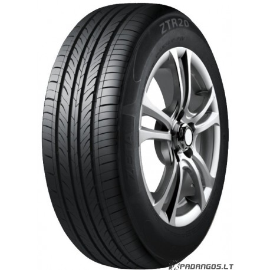

Welcome to automobilių-padangos
Padangos, palyginti padangų kainos. Kokios padangos? Kur pirkti?
2020.10.28 09:17rezulteo - Automobilių ir visureigių padangų kainų palygintojas ir gidas; pateikia informaciją apie padangas, jų gamintojus ir prekiautojus. Išsamus padangų gidas. Rezulteo naudoja slapukus, skirtus palengvinti naršymą ir kaupti statistinius duomenis apie apsilankymų svetainėse dažnumą neidentifikuojant vartotojų. Dėl sužinoti daugiau , skaitykite mūsų sąlygas. Uždaryti
padangų pirkimo gidas
Padangų gamintojai Automobilių, visureigių ir furgonų padangos Žieminės padangos Prekiautojai padangomis Padangų ženklinimo simuliatorius Praktiniai gidai Padangų naujienos Pagal dydį Pagal automobilį Pagal gamintojąKraunama...
Sezoniškumas
Rekomenduojama pasirinkti padangas pagal sezoną, temperatūrą ir kelio dangą: Vasarinės : suteikia visas savybes, esant aukštesnei nei 7°C temperatūrai Žieminės : rekomenduojamos, temperatūrai nukritus žemiau nei 7°C. Šių padangų protektorius lengviau pašalina sniegą ir suteikia geresnį sukibimą su kelio danga.Padangų gamintojai
rezulteo skirsto padangų gamintojus į 3 kategorijas Žinomiausi gamintojai : Tai gamintojai, kurie siūlo aukštus kriterijus atitinkančius gaminius visose srityse - saugumas, komfortas, aplinkos apsauga. Vidutinės klasės gamintojai Padangų gamintojai siūlantys padangas, atitinkančias žemesnius charakteristinius lygius nei pirmaujantys prekių ženklai. Jų gaminiai paprastai yra mažiau veiksmingi visuose kriterijuose. Kiti gamintojai : Padangų gamintojai daug dėmesio skiriantys žemai kainai, todėl jų gaminiai neatitinka tų pačiū kriterijų kaip kitų gamintojų padangos.Automobilių gamintojai
Kai kurie gamintojai skyrė daug dėmesio vienos ar keleto padangų gamų išvystymui. N, MO, *, ir kiti padangos krašto žymėjimai nurodo, jog padangos yra skirto tam tikriems automobilių modeliams kaip Porsche, BMW, Mercedes ir kt.
Runflat padangos
Riedėjimas nuleistomis padangomis (dar vadinamas Run Flat) leidžia tęsti kelionę dar keliasdešimt kilometrų net staiga padangose sumažėjus oro slėgiui. Šios padangos kartais reikalauja specialių ranlankių ir gali būti montuojamos tik transporto priemonėms, kuriose yra įdiegta padangų slėgio kontrolės sistema.
Skirtingi dydžiai ant atskirų ašių
Jeigu jūsų automobilis turi skirtingų dydžių padangas ant kiekvienos ašies (priekinės ir galinės), jūs galite pasirinkti atskirą dydį prekinėms ir galinėms padangoms. Šis pasirinkimo būdas gali būti taikomas tik tam tikriems sportiniams automobiliams.
Padangų gamintojai
Michelin Pirelli Bridgestone Goodyear Continental Dunlop BFGoodrich Uniroyal Daugiau padangų gamintojųPaskutinės naujienos
Yokohama: naujas Geolandar 3PMSF skirtas SUV automobiliams Skaityti toliau Nokian WR A4, rezulteo bandymas Skaityti toliau Netrukus pasirodysiančios Dunlop Sport Maxx RT2 Skaityti toliauPeržiūrėti visas naujienas
Populiariausios 2017 metų padangos
Continental ContiPremiumContact 5 Michelin Energy Saver + Goodyear EfficientGrip Performance Bridgestone Turanza ER300 Pirelli Cinturato P7 BFGoodrich Mud Terrain T/A KM2 Toyo Open Country AT/Plus Kumho Solus KH17 Naujos vasarinės padangosVasarinės padangos automobilio tipui
Bridgestone pagangos Bridgestone automobilių Bridgestone visureigių Bridgestone furgonųContinental pagangos Continental automobilių Continental visureigių Continental furgonų
Dunlop pagangos Dunlop automobilių Dunlop visureigių Dunlop furgonų
Goodyear pagangos Goodyear automobilių Goodyear visureigių Goodyear furgonų Michelin pagangos Michelin automobilių Michelin visureigių Michelin furgonų
Nokian pagangos Nokian automobilių Nokian visureigių Nokian furgonų
Pirelli pagangos Pirelli automobilių Pirelli visureigių Pirelli furgonų
Padangos automobilio markei
Padangos BMW Padangos Audi Padangos Toyota Padangos Volkswagen Padangos Peugeot Padangos Opel Padangos Ford Padangos RenaultAutomobilių, visureigių ir furgonų padangos:
Automobilių, visureigių ir furgonų padangosReikia pagalbos?
Kaip iššifruoti padangų matmenis? Kur pirkti padangas už geriausią kainą?Visi praktiniai gidai
Gidas
6 padangų funkcijos
Tinkamai nusipirkti padangas
Važiavimo komfortas, padangų pasirinkimo kriterijus Skaityti toliau Kur įsigyti padangas? Skaityti toliau Kokios padangos tinka aplinkoje, kurioje važinėju? Skaityti toliauPeržiūrėti visus praktinius gidus Atraskite rezulteo Padangos Praktiniai gidai Automobilių, visureigių ir furgonų padangos Padangų gamintojai Prekiautojai padangomis Padangų naujienos Apie mus Kas mes esame Apie rezulteo Kontaktinė informacija Naudojimo sąlygos Teisinė pastaba Links Turkija Nyderlandai Jungtinė Karalystė Ispanija Vokietija Italija Lenkija Prancūzija Rusija Copyright 2009-2020. Visos teisės saugomos Vous êtes déjà inscrit Nouveau sur rezulteo ?
S'inscrire sur rezulteo c'est très simple
Créez vos alertes prix Mémorisez vos dimensions de pneus Trouvez les réponses à toutes vos questionsKraunama...
